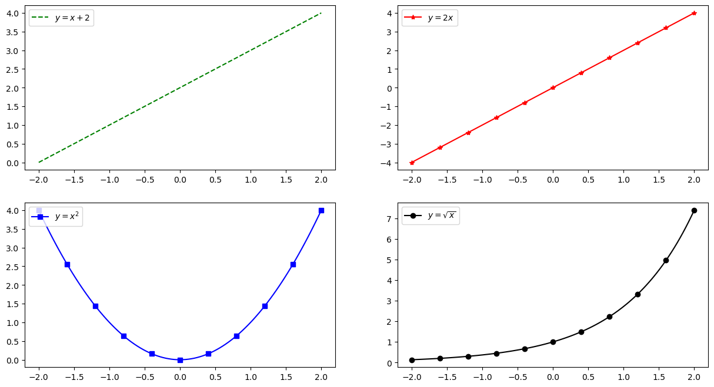

Master M1 SIC - Data Science for Digital Marketing
Intervenant: David Thébault
Python: numpy, matplotlib
Data manipulation in numpy
Dans cette section, nous allons découvrir deux modules indispensables à la programmation scientifique: numpy et matplotlib. Ces 2 librairies sont les briques de bases sur lesquels de nombreux projets s’appuient. Elles suffisent normalement pour toute analyse de petits jeux de données.
numpyest un module utilisé dans presque tous les projets de calcul numérique sous Python:Il fournit des structures de données performantes pour la manipulation de vecteurs, matrices et tenseurs plus généraux. C’est l’objet de base pour manipuler de données tabulaires.
numpyest écrit en C et en Fortran d’où ses performances élevées lorsque les calculs sont vectorisés (formulés comme des opérations sur des vecteurs/matrices).
matplotlibest un module performant pour la génération de graphiques en 2D et 3D:syntaxe très proche de celle de Matlab,
supporte texte et étiquettes en \(\LaTeX\),
sortie de qualité dans divers formats (PNG, PDF, SV, EPS…),
interface graphique interactive pour explorer les figures.
Pour utiliser numpy et matplotlib il faut commencer par les importer :
La librairie matplotlib est très riche (et complexe). Il existe une documentation fournie avec de nombreux d’exemples. Le plus simple est souvent de chercher un exemple qui fait quelques choses de simlaire et regarder comment le faire.
[4]:
import numpy as np
import matplotlib.pyplot as plt
Quelques rappels sur l’utilisation de jupyter
Quelques commandes de bases pour s’aider à trouver les informations:
Dans le mode selection de cellule (cellule bleue):
hmontre les racourcis claviers.Dans le mode édition de cellule (cellule verte):
np?affiche l’aide du modulenumpy.np.puistabaffiche les fonctions et les variable disponible dans le modulenumpy.np.array?affiche la documentation de la fonctionarraydu modulenumpy.%timeitpermet de mesurer la durée du temps pour executer la suite de la ligne.
[1]:
# np.array?
Les tableaux numpy
Dans la terminologie numpy, vecteurs, matrices et autres tenseurs sont appelés arrays. Pour créer un array, il existe plusieurs possibilités:
à partir de listes ou tuples.
en utilisant des fonctions dédiées, telles que
arange,linspace, etc.par chargement à partir de fichiers.
1.1 - A partir de listes
On peut créer un array en une dimension à partir d’une liste python classique, au moyen de la fonction numpy.array() :
[7]:
# Un vecteur: l'argument de la fonction np.array() est une liste Python
v = np.array([1, 3, 2, 4])
print(v)
print(type(v))
v
[1 3 2 4]
<class 'numpy.ndarray'>
[7]:
array([1, 3, 2, 4])
Tableau multi-dimensionels
On peut aussi créer de tableau en plus grande dimension, comme des matrices ou des tenseurs, avec des listes imbriquées:
[14]:
M = np.array([[1,2],[3,1],[5,6]])
print(M)
print(type(M))
[[1 2]
[3 1]
[5 6]]
<class 'numpy.ndarray'>
Les matrices peuvent être visualisées comme des images avec les fonctions matshow et imshow de matplotlib.
[16]:
# On enlève les axes de la figure avec `plt.axis('off')`
plt.imshow(M)
plt.axis('off')
[16]:
(-0.5, 1.5, 2.5, -0.5)
[6]:
T = np.array([[[[1, 2], [3, 4]],
[[5, 6], [7, 8]]],
[[[9, 10], [11, 12]],
[[13, 14], [15, 16]]]])
print(T)
print(type(T))
[[[[ 1 2]
[ 3 4]]
[[ 5 6]
[ 7 8]]]
[[[ 9 10]
[11 12]]
[[13 14]
[15 16]]]]
<class 'numpy.ndarray'>
Attribut d’un array
L’object array dispose de plusieurs attributs qui renseignent des informations sur son contenu. On peut ainsi accéder à la taille total du vecteur et au type d’élément dans le vecteur à partir des attributs size, nbytes et dtype:
[ ]:
print("Taille du vecteur v: {}".format(v.size))
print("Type de donnée du vecteur v: {}".format(v.dtype))
print("Taille en bytes du vecteur v: {}".format(v.nbytes))
array.size et dtype:[ ]:
print("M is a matrix with size={} and dtype={}"
.format(M.size, M.dtype))
print("T is a tensor with size={} and dtype={}"
.format(T.size, T.dtype))
Exercice 1 : (Créé un tableau avec une liste)
Créer un simple tableau à 2 dimensions (contenant les éléments que vous voulez).
Utiliser les fonctions
len(),np.shape()sur votre tableau. Comment sont elles reliées? comment est ce relié à l’attributndim?
[ ]:
# %load solutions/exo01.py
Ce qui les distingues, ce sont le nombre de leur dimension ndim et leur forme shape:
[ ]:
print("v est un array de dimension {} avec une shape={}"
.format(v.ndim, v.shape))
print("M est un array de dimension {} avec une shape={}"
.format(M.ndim, M.shape))
print("T est un array de dimension {} avec une shape={}"
.format(T.ndim, T.shape))
La shape d’un tableau peut être manipuler à grace à la fonction reshape.
[ ]:
v = np.array([ 0, 1, 2, 3, 4, 5, 6, 7, 8, 9, 10, 11])
print("v is shape:", v.shape)
[ ]:
M = v.reshape(3, 4)
print("M is shape {} while v is still shape {}"
.format(M.shape, v.shape))
[ ]:
M = v.reshape(3, -1)
print("M is shape:", M.shape)
[ ]:
T = v.reshape(1, 2, 3, 2, 1)
print("T is shape:", T.shape)
[ ]:
# This will trow an error as we do keep all values in v
# when we reshape it.
v.reshape(3, 3)
Indexation des données
Comme pour les listes, on utilise les crochets pour accéder à un élément du tableau. L’indexation commence à 0 aussi. On peut aussi assigner des éléments directements:
[ ]:
print(v)
print(v[0], v[1])
[ ]:
v[2] = 42
print(v)
Pour les tableaux multi-dimensionnels, l’indexation renvoie aussi un array qui peut lui même être indexé. Une notation rapide avec des virgules est aussi possible:
[ ]:
print(M[0])
[ ]:
print("type(M[0]) = {}".format(type(M[0])))
[ ]:
print("M[0][1] = {}".format(M[0][1]))
[ ]:
print(M[1])
print("M[1, 0] = {}".format(M[1, 0]))
Exercice 2 : (Indexation des donnés)
Modifier le tableau
vpour que son 3e élément soit égale à 0.Modifier le tableau
vpour que son dernier élément soit égale à 10.
[ ]:
# %load solutions/exo02.py
Type de donnée
[ ]:
# Par default, le type des données est float64
v_float = np.array([1., 3.1, 2.5, 4., 0., 8.])
print(v_float)
print("Type de donnée du vecteur v_float: {}"
.format(v_float.dtype))
print("Taille en bytes vecteur v_float: 6 x 8 = {}\n"
.format(v_float.nbytes))
À la création de l’array, on peut préciser de quelle type de donnée il s’agit avec l’argument dtype:
Types possibles avec
dtype:int,float,complex,bool,object, etc.
On peut aussi créé des tableaux avec des types de données différents:
[ ]:
# On peut les convertir en entier -> perte de la partie décimale
v_int = np.array([1., 3.1, 2.5, 4., 0., 8.], dtype=int)
print(v_int)
print("Type de donnée du vecteur v_int: {}"
.format(v_int.dtype))
print("Taille en bytes vecteur v_int: 6 x 8 = {}\n"
.format(v_int.nbytes))
On peut aussi spécifier la précision en bits:
int64,int16,float128,complex128.
[ ]:
# On peut les convertirs en float32 -> moins précis mais moins gros en mémoire
v_int32 = np.array([1., 3.1, 2.5, 4., 0., 8.], dtype=np.float32)
print(v_int32)
print("Type de donnée du vecteur v_int: {}"
.format(v_int32.dtype))
print("Taille en bytes vecteur v_int: 6 x 4 = {}\n"
.format(v_int32.nbytes))
Attention ! Une fois le type fixé, les données qui sont stockées dans le vecteur sont toutes du même type.
[ ]:
v = np.array([1, 2, 3, 4])
v[0] = 3.2
print(v)
print("dtype de v:", v.dtype)
Le type des éléments doit rester le même lors de l’assignement. On ne peut donc pas assigner un élément qui ne peut pas être converti dans le dtype du tableau.
[ ]:
v[0] = "heloo"
On peut cependant obtenir une copie l’array avec le bon type grace à la méthode astype:
[ ]:
v_float = v.astype(float)
v_float[0] = 3.2
print(v_float, "dtype =", v_float.dtype)
1.2 - A partir de fonctions spéciales
Tableaux constants
array à partir de fonctions spéciales:np.zeros, np.ones, np.empty, np.eye, …Toutes ces fonctions prennent comme premier argument shape.
np.zeros, np.ones et np.eye pour répondre au question suivante:[ ]:
# %load solutions/exo03.py
[ ]:
np.zeros?
[ ]:
# Généré un tableau de 1 de taille 10, puis de taille 2x3x2
v1 = np.ones(10)
M1 = np.ones((2, 3, 2))
print("1 vector of size: {}\n".format(v1.shape), v1)
print("1 tensor of size: {}\n".format(M1.shape), M1)
assert v1.shape == (10,)
assert M1.shape == (2, 3, 2)
assert np.all(M1 == 1)
[ ]:
# Généré la matrice identité de taille 4x4
I = np.eye(4)
print("Id matrix of size: {}\n".format(I.shape), I)
Générer des intervales
Les fonctions arange et linspace peuvent être utilisée pour générer des données séquentielles:
[ ]:
# create a range
x1 = np.arange(0, 21, 2) # arguments: start, stop, step
print("Valeurs paires de 0 à 20:", x1)
[ ]:
# un tableau avec un pas non entier:
x2 = np.arange(-1, 1, 0.1)
print("Valeurs entre -1 et 1, tous les .1:", x2)
[ ]:
# un tableau avec un pas négatif:
x3 = np.arange(100, -1, -1)
print("Valeurs de 100 à 0", x3)
np.linspace[ ]:
# %load solutions/exo04.py
[ ]:
# Créer un tableau avec les valeurs entre -1 et 1, tous les .1:
l2 = np.linspace(-1, .9, 20)
assert np.allclose(l2, x2)
print(l2)
[ ]:
# Créer un tableau avec les valeurs de 100 à 0:
l3 = np.linspace(100, 0, 101)
assert np.allclose(l3, x3)
print(l3)
Générer des tableaux aléatoires
np.random de numpy.Uniforme:
np.random.randgénère des nombres tirés uniformément dans \([0, 1]\).Normale:
np.random.randngénère des nombres tirés selon une loi normale \(\mathcal N(0, 1)\).
Il expose aussi des fonctions de plus haut niveau pour différentes lois de probabilité.
[ ]:
np.random.rand(5, 5)
[ ]:
np.random.randn(5, 5)
[ ]:
a = np.random.randn(100000)
hh = plt.hist(a, bins=100)
1.3 - A partir d’un fichier: I/O pour les array
Fichiers séparés par des virgules (CSV)
Un format fichier classique est le format CSV (comma-separated values), ou bien TSV (tab-separated values). Pour lire de tels fichiers, on peut utiliser numpy.genfromtxt. Par exemple:
[ ]:
!cat data/2_numpy_data.csv
[ ]:
data = np.genfromtxt('data/2_numpy_data.csv', delimiter=',')
data
A l’aide de numpy.savetxt on peut enregistrer un array numpy dans un fichier txt:
[ ]:
M = np.random.rand(3,3)
print(M)
[ ]:
np.savetxt("random-matrix.txt", M, delimiter=';')
!cat random-matrix.txt
[ ]:
np.savetxt("random-matrix.csv", M, fmt='%.5f', delimiter=';') # fmt spécifie le format
!cat random-matrix.csv
1.4 - Indexing des tableaux
Comme les listes, les tableaux élément des tableaux peuvent être séléctioné avec du slicing. Slicing fait référence à la syntaxe M[start:stop:step] pour extraire une partie d’un array:
[ ]:
v = np.arange(5)
v = np.arange(0, 5, 1)
print(v)
[ ]:
print("Indices de début, fin, et pas avec leurs valeurs"
" par défaut:\n", v[::])
[ ]:
print("Pas de 2:", v[::2])
[ ]:
print("Les 3 premiers éléments:", v[:3])
print("A partir de l'indice 2:", v[2:])
De la même manière, chaque dimension du tableau peut être slicée:
[ ]:
M = np.arange(12).reshape(4, 3)
print(M)
[ ]:
print("On selectionne une ligne sur 2 et pas la"
" 1ere colone:\n", M[::2, 1:])
[ ]:
print("On selectionne les lignes 1 et 2 et uniquement la dernière colone:\n",
M[1:3, :1])
Les slices (ou tranches) sont modifiables :
[ ]:
M[1::2, -1:1:-1] = 1000
print(M)
Exercice 5 : (le plateau d’échec)
Créez un tableau de zéros et le remplir pour obtenir un motif de plateau d’échec de dimension 8x8. |ec33c329b9794acd993c230823ef9a96|
[ ]:
# %load solutions/exo05.py
Indexation avancée (fancy indexing)
Lorsque qu’on utilise des listes ou des array pour définir des tranches :
[ ]:
A = np.array([[n + m * 10 for n in range(5)]
for m in range(5)])
print(A)
[ ]:
row_indices = [1, 2, 3]
print(A[row_indices])
[ ]:
print(A[[1, 2]][:, [3, 0]])
[ ]:
A[[1, 2]][:, [3, 4]] = 0 # ATTENTION !
print(A)
[ ]:
A[np.ix_([1, 2], [3, 4])] = 0
print(A)
On peut aussi utiliser des masques binaires :
[ ]:
B = np.random.rand(100)
B
[ ]:
B > .9
[ ]:
print(B[B < .1])
[ ]:
# ou encore
B = np.arange(5)
a = np.array([1, 2, 3, 4, 5])
print(a < 3)
print(B[a < 3])
Exercice 6 : (Fancy indexing)
Généré un tableau contenant contenant 100 éléments tirés au hasard selon \(\mathcal U([0, 1])\) (~
np.random.rand).En utilisant l’indexation avancée, sélectionnez au hasard avec répétition 10 éléments de ce tableau.
(Astuce: ``np.random.randint(max_int, size=n)`` génère n nombres au hasard de 0 à ``max_int``)
[ ]:
# %load solutions/exo06.py
[ ]:
np.random.choice(X, size=10, replace=False)
where
Un masque binaire peut être converti en indices de positions avec where
[ ]:
x = np.arange(0, 10, 0.5)
print(x)
mask = (x > 5) * (x < 7.5)
print(mask)
indices = np.where(mask)
indices
[ ]:
x[indices] # équivalent à x[mask]
2 - Opérations sur les tableaux
Maintenant que l’on a vu comment créér des tableaux et accéder à leur élément, on va voir les opérations mathématique que l’on peut faire dessus:
2.1 - Opérations scalaires et terme-à-terme
On peut effectuer les opérations arithmétiques habituelles pour multiplier, additionner, soustraire et diviser des arrays avec/par des scalaires :
[ ]:
v1 = np.ones(10)
print(v1)
print(v1 * 2)
print(v1 + 10)
On peut aussi appliqué des fonctions mathématiques terme-à-terme comme np.exp, np.log, np.sqrt, np.abs, np.sin, np.cos, np.arctan, …
[9]:
x = np.linspace(-2, 2, 101)
plt.figure(figsize=(15, 8))
plt.subplot(2, 2, 1)
plt.plot(x, x + 2,'g--', label='$y = x + 2$')
plt.legend(loc=0)
plt.subplot(2, 2, 2)
plt.plot(x, 2 * x, 'r*-', label='$y = 2x$', markevery=10)
plt.legend(loc=2)
plt.subplot(2, 2, 3)
plt.plot(x, x ** 2, 'bs-', label='$y = x^2$', markevery=10)
plt.legend(loc=2)
plt.subplot(2, 2, 4)
plt.plot(x, np.exp(x), 'ko-', label='$y = \sqrt{x}$', markevery=10)
plt.legend(loc=2)
plt.show()

np.pi.[ ]:
# %load solutions/exo07.py
Les opérations par défaut entre 2 array sont aussi terme-à-terme.
[ ]:
A = np.arange(25).reshape(5, 5)
print(A)
[ ]:
print(A * A)
[ ]:
print((A + A.T)/ 2)
[ ]:
A = np.zeros((2, 3))
B = np.zeros((4, 3))
print(A, B)
A+B
En multipliant des arrays de tailles compatibles, on obtient des multiplications terme-à-terme par ligne :
[ ]:
v1 = np.arange(6)
A = np.ones((5, 6))
print(A.shape, v1.shape)
print(A)
print(v1)
print(A * v1)
De façon plus générale, on peut faire des opérations sur des tableaux de différentes tailles. Dans certains cas, NumPy peut transformer les tableaux pour qu’ils aient la même taille, cette conversion s’appelle le “Broadcasting”. 
[ ]:
a = np.arange(4)
b = np.arange(5)
print(a, a.shape)
print(b, b.shape)
a * b
[ ]:
B = b[np.newaxis, :]
A = a[:, None]
c = A * B
print(c)
print(A.shape, B.shape, c.shape)
Il existe une règle pour savoir dans quel cas on peut faire du “broadcasting”: Dans une opération, la taille des axex des deux tableaux doit être soit la même, soit une des deux doit être 1. Dans la figure ci-dessus, cette règle est respectée:
a: 4 x 3
b: 4 x 3
result: 4 x 3
a: 4 x 3
b: 3
result: 4 x 3
a: 4 x 1
b: 3
result: 4 x 3
Que donnerait les deux cas suivant?
Image (3d array): 256 x 256 x 3
Scale (1d array): 3
Result (3d array):
A (4d array): 8 x 1 x 6 x 1
B (3d array): 7 x 1 x 5
Result (4d array):
[ ]:
Exercice 8 : (Opération terme-à-terme)
Sans utiliser de boucles (for/while) :
Créer une matrice (5x6) aléatoire
Remplacer une colonne sur deux par sa valeur moins le double de la colonne suivante
Remplacer les valeurs négatives par 0 en utilisant un masque binaire
[ ]:
# %load solutions/exo08.py
2.2 - Algèbre matricielle
Comment faire des multiplications de matrices ? Deux façons :
en utilisant les fonctions
dot; (recommandé)en utiliser l’opérateur
@.
[ ]:
A = np.array([[n + m * 10 for n in range(5)] for m in range(5)])
v1 = np.arange(5)
print(A.shape, v1.shape)
print(A)
print(v1)
print(type(A), type(v1))
[ ]:
print(v1 * v1) # multiplication élément par élément
print(np.dot(v1, v1)) # multiplication matrice
print(v1 @ v1) # multiplication matrice
[ ]:
A.dot(v1)
[ ]:
print(A * A) # multiplication élément par élément
print(A @ A) # multiplication matrice
Voir également les fonctions : inner, outer, cross, kron, tensordot. Utiliser par exemple help(kron) ou kron?.
2.3 - Algébre de plus haut niveau
numpy expose aussi des fonctionalités de plus haut niveau telles que les décompositions classique en valeurs propres/singulières, factorisation de Cholesky/QP, …np.linalg.numpy sont aussi accessibles dans la librairie `scipy <https://docs.scipy.org/doc/>`__. Pour plus, d’information, voir tutorial scipy.np.linalg.inv).[ ]:
# %load solutions/exo09.py
2.4 - Opérations de réduction
numpy propose de opération de réduction sur les tableaux.np.max, np.min, np.sum, np.mean, np.std, np.argmax, …[ ]:
data = np.arange(20)
print(data.sum())
print("Moyenne:", np.mean(data), "Std:", data.std(), "Var:", data.var())
[ ]:
data = np.arange(20).reshape((5, 4))
data[3, :] = 9
print(data)
# Moyenne globale:
print("Moyenne globale:", data.mean())
print("Moyennes par colone:", data.mean(axis=1))
print("Moyennes par ligne:", data.mean(axis=0))
# la moyenne de la troisième colonne
print("Moyenne de la 3e ligne", np.mean(data[3, :]), data.mean(axis=0)[3])
100x5 selon une loi normale.[ ]:
# %load solutions/exo10.py
2.5 - Concaténer, répéter des arrays
En utilisant les fonctions repeat, tile, vstack, hstack, et concatenate, on peut créer des vecteurs/matrices plus grandes à partir de vecteurs/matrices plus petites :
[ ]:
# Repeat et tile:
a = np.array([[1, 2], [3, 4]])
print(a)
# répéter chaque élément 3 fois
print(np.repeat(a, 3)) # résultat 1-d
# on peut spécifier l'argument axis
print(np.repeat(a, 3, axis=1))
# répéter la matrice 3 fois
print(np.tile(a, 3))
[ ]:
# Concatenate
b = np.array([[5, 6]])
print("Add a line\n", np.concatenate((a, b), axis=0))
print("Vertical\n", np.vstack((a, b)))
# stacking horizontal ou vertical
print("Add a column\n", np.concatenate((a, b.T), axis=1))
print("Horizontal\n", np.hstack((a, b.T)))
2.6 - Itérer sur les éléments d’un array
Dans la mesure du possible, il faut éviter l’itération sur les éléments d’un array : c’est beaucoup plus lent que les opérations vectorisées
Mais il arrive que l’on n’ait pas le choix…
Pour obtenir les indices des éléments sur lesquels on itère (par exemple, pour pouvoir les modifier en même temps) on peut utiliser
enumerate:
[ ]:
M = np.array([[1, 2], [3, 4]])
for row in M:
print("row", row)
for i, element in enumerate(row):
print(f"Element {i} ->", element)
2.7 - Utilisation d’arrays dans des conditions
Losqu’on s’intéresse à des conditions sur tout on une partie d’un array, on peut utiliser any ou all :
[ ]:
print(M)
if (M > 5).any():
print("au moins un élément de M est plus grand que 5")
else:
print("aucun élément de M n'est plus grand que 5")
if (M > 5).all():
print("tous les éléments de M sont plus grands que 5")
else:
print("tous les éléments de M sont plus petits que 5")